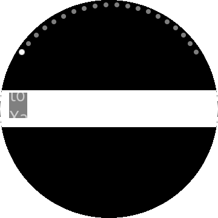

CircleStackLayout
CircleStackLayout organizes views in a one-dimensional line ("stack"), either horizontally or vertically. CircleStackLayout is similar to Xamarin.Forms.StackLayout, but it arranges internal components in a form that fits the circular screen. Rectangular components are placed in close proximity to the circle. Margin is calculated after placement.
If Orientation is not set, Vertical is used. The larger the Spacing value, the greater the distance between the components placed. At the right end of the following figure, the Spacing value is 50:
 |
 |
 |
|---|---|---|
| Horizontal | Vertical | Spacing |
Note
CircleStackLayout will lay out the children in the form of inserting a circle with a radius that is the shorter of "width" and "height". Therefore, it may be strange if one of the axes is very short, so it is better to use it when the width and height of the layout area are similar.
Add CircleStackLayout in ContentPage
You can set CircleStackLayout in ContentPage.
In the following example, there is a large number of BoxView. Therefore, the entire content is larger than the screen size and uses CircleStackLayout in ScrollView.
For more information, see the following links:
- CircleStackLayout API reference
- Xamarin.Forms.StackLayout API reference
- Xamarin.Forms.StackLayout Guide
The code example of this guide uses TCCircleStackLayout.xaml code of WearableUIGallery. The code is available in test\WearableUIGallery\WearableUIGallery\TC\TCCircleStackLayout.xaml
XAML file
<?xml version="1.0" encoding="utf-8" ?>
<w:IndexPage
x:Class="WearableUIGallery.TC.TCCircleStackLayout"
xmlns="http://xamarin.com/schemas/2014/forms"
xmlns:x="http://schemas.microsoft.com/winfx/2009/xaml"
xmlns:local="clr-namespace:WearableUIGallery"
xmlns:w="clr-namespace:Tizen.Wearable.CircularUI.Forms;assembly=Tizen.Wearable.CircularUI.Forms">
...
<ContentPage>
<ScrollView>
<w:CircleStackLayout>
<BoxView BackgroundColor="Red" />
<BoxView BackgroundColor="Orange" />
<BoxView BackgroundColor="Yellow" />
<BoxView BackgroundColor="Green" />
<BoxView BackgroundColor="Blue" />
<BoxView BackgroundColor="Navy" />
<BoxView BackgroundColor="Purple" />
<BoxView BackgroundColor="Red" />
<BoxView BackgroundColor="Orange" />
<BoxView BackgroundColor="Yellow" />
<BoxView BackgroundColor="Green" />
<BoxView BackgroundColor="Blue" />
<BoxView BackgroundColor="Navy" />
<BoxView BackgroundColor="Purple" />
</w:CircleStackLayout>
</ScrollView>
</ContentPage>
...
</w:IndexPage>
Bad case to using
<ContentPage>
<w:CircleStackLayout VerticalOptions="Center" BackgroundColor="White">
<Label VerticalOptions="Center" Text="Welcome to Xamarin Forms!" BackgroundColor="Gray"/>
</w:CircleStackLayout>
</ContentPage>

In Bad case, the width of CircleStackLayout is too long of the height of it. CircleStackLayout lay out the children in a small circle because it assumes shorter axes is a radius.
Check out next very simple example of using StackLayout.
<ContentPage>
<StackLayout VerticalOptions="Center" BackgroundColor="White">
<Label VerticalOptions="Center" Text="Welcome to Xamarin Forms!" BackgroundColor="Gray"/>
</StackLayout>
</ContentPage>

You should check the size of the CircleStackLayout if you lay out the children to right place.
<ContentPage>
<w:CircleStackLayout VerticalOptions="Fill" BackgroundColor="White">
<Label
HorizontalOptions="CenterAndExpand"
VerticalOptions="CenterAndExpand"
Text="Welcome to Xamarin Forms!"
BackgroundColor="Gray"/>
</w:CircleStackLayout>
</ContentPage>
In good case of the CircleStackLayout. you can see each vertex of the label that contacts inside of the circle.